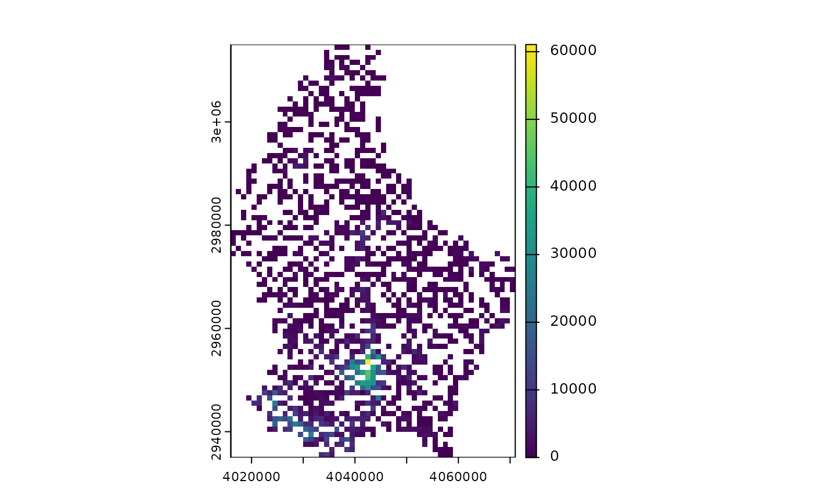

Reads a CSV file (optionally gzipped) of public transport accessibility data, reprojects point coordinates, and rasterizes the data onto a regular grid. Optionally, it can add a second raster layer containing INSPIRE-compliant grid cell IDs.
Usage
tph_to_raster(
input_file,
out_column_name = NULL,
crs_src = 4326,
crs_dst = 3035,
x_offset = 0,
y_offset = 0,
resolution_m = 1000,
out_raster_file = NULL,
add_id = TRUE
)Arguments
- input_file
Character. Path to the input CSV (gzipped) containing at least columns 'lon', 'lat', and one numeric data column.
- out_column_name
Character or NULL. Name to assign to the data column in the output raster. If NULL (default), the original column name from the CSV is used.
- crs_src
Integer or character. Source CRS (EPSG code or WKT); default is 4326.
- crs_dst
Integer or character. Destination CRS (EPSG code or WKT); default is 3035.
- x_offset
Numeric. An offset subtracted from the projected x-coordinate. This is used to convert the source point's reference (e.g., a lower-left corner) to the cell's theoretical centroid. For centroid-based data like GISCO, the default of 0 is correct.
- y_offset
Numeric. An offset subtracted from the projected y-coordinate, similar to
x_offset.- resolution_m
Numeric. Cell size in units of the destination CRS; default is 1000 (1 km).
- out_raster_file
Character or NULL. Output filename for the raster. If provided, the raster is written to this file (creating directories as needed) and the filename is returned. If NULL (default), the SpatRaster is returned directly.
- add_id
Logical. If
TRUE(the default), a second layer named "id" is added to the raster. This is a factor layer where the labels correspond to the INSPIRE-compliant grid cell ID for each cell.
Value
If out_raster_file is NULL, a terra::SpatRaster object. This will be a
multi-layer raster if add_id = TRUE. If out_raster_file is provided, a character
string of the file path is returned.
Examples
tph_file <- system.file(
"extdata",
"ver1_0_LU_1km_pt_ppl_within_10-20_min.csv.gz",
package = "tphconv"
)
library(terra)
#> terra 1.8.60
# Convert a CSV to a raster with the ID layer (default)
r_with_id <- tph_to_raster(input_file = tph_file)
plot(r_with_id)
